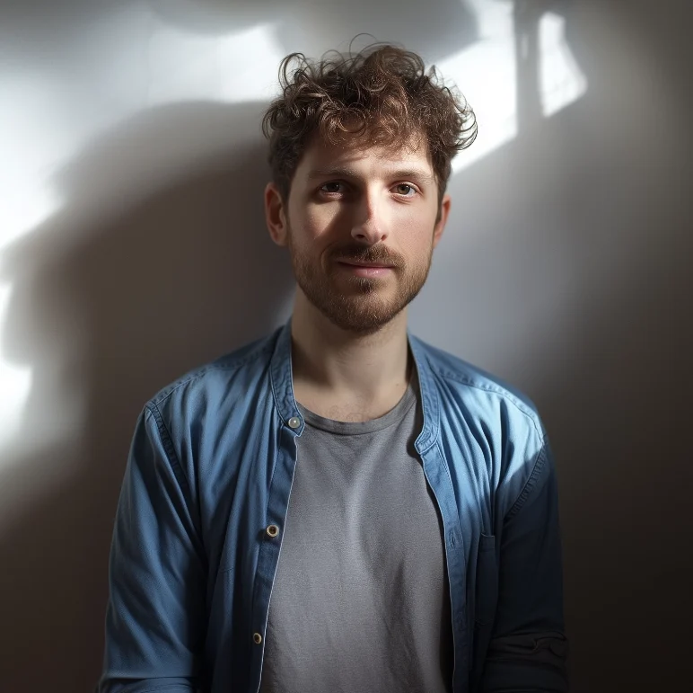

About Me
I'm a passionate UX Designer with over 5 years of experience creating digital experiences that put users first. My approach combines analytical thinking with creative problem-solving to deliver solutions that are both beautiful and functional.
I specialize in user research, interaction design, and design systems. I believe that great design is invisible – it solves problems seamlessly while creating delightful experiences that users love.
When I'm not designing, you can find me exploring new technologies, reading about psychology and human behavior, or enjoying the outdoors. I'm always eager to learn and grow, both personally and professionally.